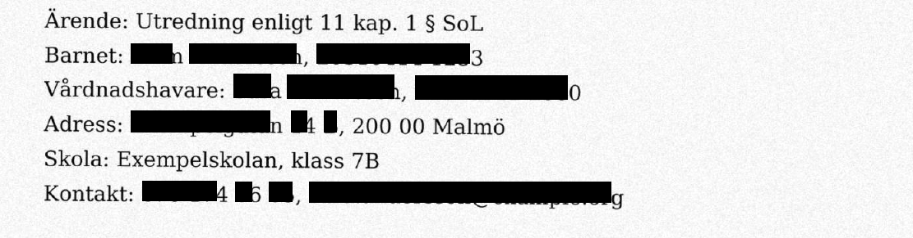
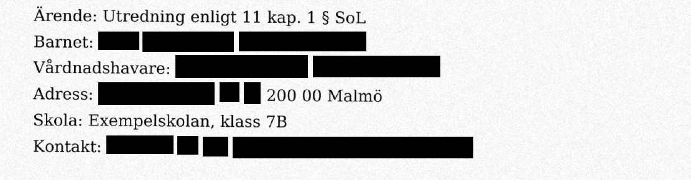

Maskning som går att kontrollera
Utlämna hjälper registratorn att pröva en handling, maska det som ska bort och lämna ut ett paket. Texten tas bort ur filen, den döljs inte. Allt körs på den egna datorn, och mottagaren kan kontrollera resultatet själv.
Fyra skäl att pröva Utlämna
Varje skäl är något ni kan kontrollera själva.
Texten är borta, inte dold
Varje sida plattas till en bild, och varje maskad ruta mäts så att allt bläck under den är täckt. Annars skapas inget paket. Se jämförelsen.
Inget lämnar datorn
Programmet fungerar utan nät, utan konto och utan licensserver, och anropar bara den egna datorn. Det provas i varje bygge. Läs om provet.
Ni ser varför, och kan visa det
Varje träff visar varför den markerades, lagrum kan anges för varje maskning, och paketet innehåller ett underlag till beslutet. Så arbetar handläggaren.
Mottagaren kan kontrollera själv
{{kv_kort}} Läs mer.
Utlämna är i pilotfas. Vad som är provat och vad som inte är det står öppet på sidan Säkerhet, och programmet föreslår bara: handläggaren beslutar.
Ett svart fält är inte en maskning
I många verktyg ritas en svart ruta ovanpå texten. Under rutan ligger texten kvar och går att markera, kopiera och söka fram. Men även när texten är borta kan det gå fel: om rutan är en aning för kort syns sista siffran.
Samma skannade testakt, tre sätt att maska
| Sätt | Textlager | Ctrl+F hittar numret | Delar av numret syns |
|---|---|---|---|
| Svarta rutor ovanpå texten | Finns kvar | Ja | Nej |
| Rutor efter OCR-lagrets mått, sidan plattad till bild | Borta | Nej | Ja, rutorna täckte 92–97 % av bläcket |
| Utlämna: rutan växer till hela ordet, sidan plattas till bild, och varje ruta mäts | Borta | Nej | Nej, mäts vid export |
Mätt på en påhittad skannad akt. Första raden fångar kontrollverktyget. Andra raden fångas av pixelkontrollen i Utlämna vid export, som kräver att allt bläck under rutan är täckt.


Så arbetar handläggaren
- Skapa ärendetDiarienummer, datum, vad som begärs och handläggare. Sökande registreras som anonym.
- Lägg till handlingarSläpp PDF-filer. Skannade sidor tolkas med OCR på datorn.
- Pröva träffarnaUtlämna föreslår personnummer, samordningsnummer, telefonnummer, e-post, kontonummer, namn efter etiketter som "Barnet:", adresser och skolor. Vid varje träff står varför den markerades: kontrollsiffran stämmer, den står efter etiketten "Barnet:", eller den finns i er ordlista. Du väljer Maskera eller Behåll och kan ange lagrum. Ärendet kan kräva lagrum för varje maskning, och programmet frågar innan en hel sida maskas.
- GodkännDu bekräftar att du har prövat träffarna. Först då går det att skapa paketet. Skärmen visar hur många uppgifter programmet föreslog, hur många förslag du ändrade, hur många du lade till för hand och hur lång tid du har arbetat med ärendet. Siffrorna skickas inte någonstans, de sparas på datorn och står i paketets logg. När du är klar kan du radera ärendet.
- UtlämningspaketetEn maskad PDF där texten är borta, en logg som PDF och JSON, ett underlag till beslutet och ett kvitto med kontrollsummor. Underlaget visar vad som maskats, med vilket lagrum och på vilka sidor, utan de maskade uppgifterna. Programmet fattar inget beslut.
Förslag, inte beslut. Utlämna hittar mönster. Du avgör vad som ska bort. Programmet fattar inga sekretessbeslut, och det står i gränssnittet, inte i en fotnot.
Inget lämnar datorn, och inget lämnar den här sidan
Utlämna
- Ingen uppladdning, inget konto, ingen telemetri.
- Maskningsmotorn är ett lokalt program som bara lyssnar på den egna datorn.
- Inga uppdateringar över nätet. En ny version kommer som installationsfil.
- Ingen licensserver: programmet startar och fungerar utan någon kontakt med nätet.
- Loggen anger motorns version och kontrollsumma för varje utlämning.
Den här webbplatsen
- Inga kakor, inga skript, ingen mätning av besökare.
- Inga externa typsnitt, bilder eller tjänster.
- Ligger hos {{hosting}}.
- Inget formulär och ingen uppladdning. Läs mer.
Ladda aldrig upp en handling hos oss. Den här sidan kan inte ta emot filer, och vi vill inte ha handlingar i e-post heller. Behöver vi se ett fel ber vi om en påhittad testfil.
Prova utan att skicka något
Provet är en nedladdad app och en skannad testakt. Testakten kan du hämta redan nu. Appen får pilotkommuner som installationsfil från oss, och den fungerar utan nät.
Alla personer och nummer i testakten är påhittade. Personnumren har födelsedatum år 2031, så de kan inte tillhöra någon verklig person.
Säkerhetsunderlag för er IT
IT-avdelningen kan få ett dokument som är skapat ur programmets källkod och bygge, så att det stämmer med den version ni granskar. Det innehåller komponentförteckning, kontrollsummor för installationsfilerna, vilka nätverksprov som körs i varje bygge, vilka filer programmet skriver och var, och de kända begränsningarna. Begränsningarna står med, bland annat att databasen inte är krypterad och att installationsfilerna inte är signerade än.
Knappen öppnar ett mejl till oss. Dokumentet skickas som PDF.